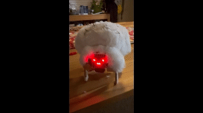
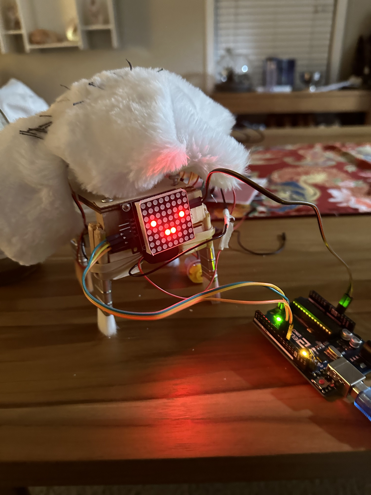
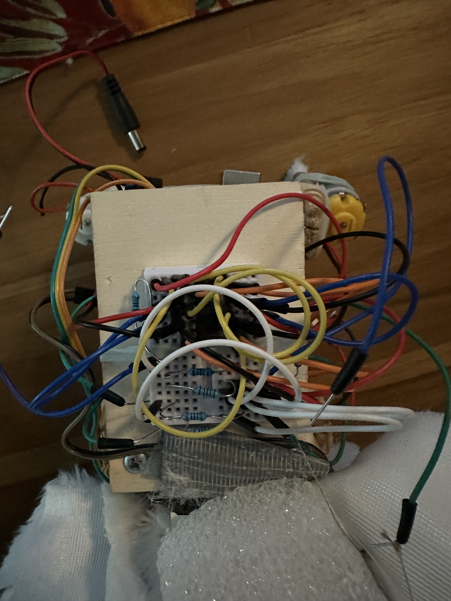
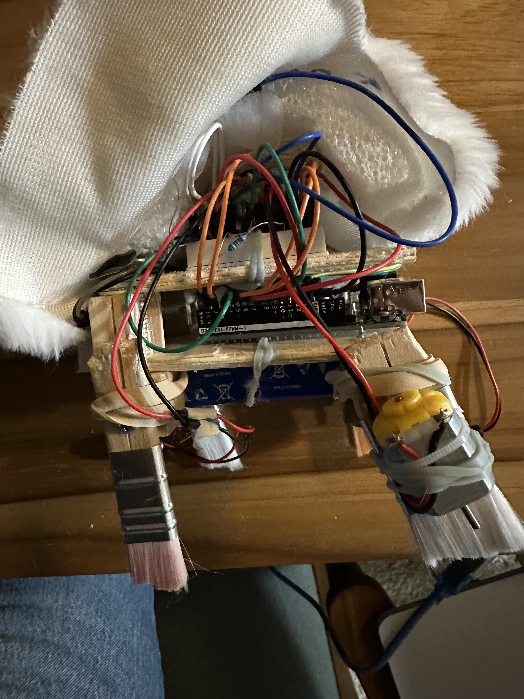
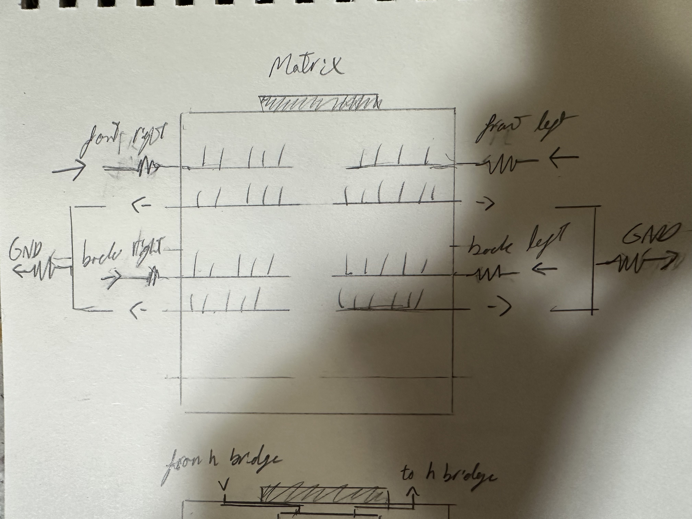
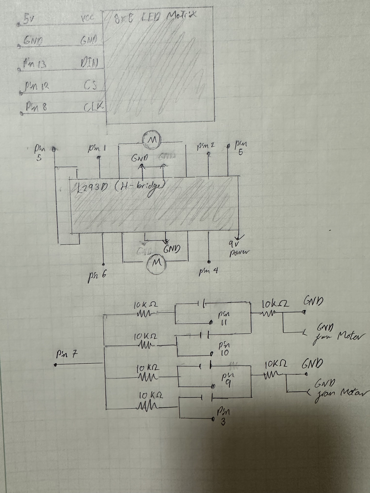
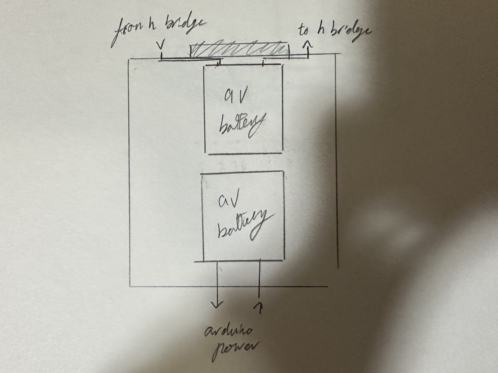

Skye's Final
A fuzzy terrifying robot


Concept:
A desk companion robot that is pettable. The 'fuzzy buddy' displays different faces and does different interactions based on the combination of inputs. Inputs are recieved through stroke sensors comprised of capacitace sensors. The device runs off of it's own power source so it can be independent of a charger. The device moves on two sets of bristles that are being jostled by a motor each.
Materials:
• Conductive thread
• 2 x DC motors
• 2 x 9V batteries
• An 8x8 LED matrix
• H bridge
• 6 x 10k resistors
• Wires
• Fabric
• Screws
• Styrofoam piece for structure
• Needle
• Wood to lazer cut for base and frame
 
Code:
#include "LedControl.h" //libary for 8x8 LED matrix
#include "CapacitiveSensor.h" //libary for capacitance sensors
const int motorRF = 1; //Right forward motor
const int motorRB = 5; //Right back motor
const int motorLF = 2; //Left forward motor
const int motorLB = 4; //Left back motor
const int dataPin = 13; //Data pin for 8x8 LED matrix
const int selectPin = 12; //Select pin for 8x8 LED matrix
const int clockPin = 8; //Clock pin for 8x8 LED matrix
LedControl lc=LedControl(dataPin, clockPin, selectPin, 0);//Set up the code with the right pins and number of matixes
CapacitiveSensor cs_7_11 = CapacitiveSensor(7,11);//front left area
CapacitiveSensor cs_7_10 = CapacitiveSensor(7,10);//back left area
CapacitiveSensor cs_7_9 = CapacitiveSensor(7,9);//front right area
CapacitiveSensor cs_7_3 = CapacitiveSensor(7,3);//back left area
void setup() { //code to run once
Serial.begin(9600); //setting serial rate
lc.shutdown(0,false); //setting up the matrix
lc.setIntensity(0,8); //Setting the brightness of the LEDS in the matrix
lc.clearDisplay(0); //Cleans the display if any LEDs are on
pinMode(7, OUTPUT); //pin for the power for the Capacitors
pinMode(5, OUTPUT); //pin for the power for the H bridge
digitalWrite(7,HIGH); //power for the Capacitors
digitalWrite(5,HIGH); //power for the H bridge
}
void loop() { //code to run on repeat
lc.clearDisplay(0);//Clears screen if updated by behaviour
lc.setLed(0,5, 3, true);//:| face smile
lc.setLed(0,5, 4, true);//:| face smile
lc.setLed(0,3, 6, true);//:| face one eye
lc.setLed(0,3, 1, true);//:| face other eye
int frontLeft = cs_7_11.capacitiveSensor(30); //get value for front left capacitor area
int backLeft = cs_7_10.capacitiveSensor(30); //get value for back left capacitor area
int backRight = cs_7_9.capacitiveSensor(30); //get value for back right capacitor area
int frontRight = cs_7_3.capacitiveSensor(30); //get value for front right capacitor area
delay(100); //To reduce how often the sensors are being read
Serial.print(backLeft); //For testing, back left value
Serial.print(", "); //For testing, seperator
Serial.print(backRight); //For testing, back right
Serial.print(", "); //For testing, seperator
Serial.print(frontLeft); //For testing, front left
Serial.print(", "); //For testing, seperator
Serial.println(frontRight); //For testing, front right, prints the line and last value
if ((backLeft > 250) && (backRight < 250) && (frontLeft < 250) && (frontRight < 250)){ //conditional test for turing left
left(); //calls turn left behaviour
}
if ((backLeft < 250) && (backRight > 250) && (frontLeft < 250) && (frontRight < 250)){ //conditional test for turing right
right(); //calls turn right behaviour
}
if ((backLeft < 250) && (backRight < 250) && (frontLeft > 250) && (frontRight > 250)){ //conditional test for moving forrward
forward(); //calls forward behaviour
}
if ((backLeft > 250) && (backRight > 250) && (frontLeft < 250) && (frontRight < 250)){ //conditional test for scratch
scratch(); //calls scratch behaviour
}
}
void right(){ //Turn right behaviour
lc.clearDisplay(0); //clears display of default face
lc.setLed(0,5, 3, true); //looking right face
lc.setLed(0,5, 4, true);
lc.setLed(0,3, 5, true);
lc.setLed(0,3, 0, true);
digitalWrite(motorRF,LOW); //right motor on
digitalWrite(motorRB,HIGH);
delay(1000); //time to turn
digitalWrite(motorRF,LOW); //turn off motors
digitalWrite(motorRB,LOW);
} void left(){ //Turn left behaviour
lc.clearDisplay(0); //clears display of default face
lc.setLed(0,5, 3, true); //looking left face
lc.setLed(0,5, 4, true);
lc.setLed(0,3, 7, true);
lc.setLed(0,3, 2, true);
digitalWrite(motorLF,HIGH); //left motor on
digitalWrite(motorLB,LOW);
delay(1000); //time to turn
digitalWrite(motorLF,LOW); //turn off motors
digitalWrite(motorLB,LOW);
}
void scratch(){ //Scratch behaviour
lc.clearDisplay(0); //clears display of default face
lc.setLed(0,5, 3, true); //>.< face
lc.setLed(0,5, 4, true);
lc.setLed(0,3, 6, true);
lc.setLed(0,3, 5, true);
lc.setLed(0,3, 1, true);
lc.setLed(0,3, 2, true);
digitalWrite(motorRF,LOW); //Move forwards
digitalWrite(motorRB,HIGH);
digitalWrite(motorLF,HIGH);
digitalWrite(motorLB,LOW);
delay(500); //wait
digitalWrite(motorRF,HIGH); //Move backwards
digitalWrite(motorRB,LOW);
digitalWrite(motorLF,LOW);
digitalWrite(motorLB,HIGH);
delay(500); //wait
digitalWrite(motorRF,LOW); //Move forwards
digitalWrite(motorRB,HIGH);
digitalWrite(motorLF,HIGH);
digitalWrite(motorLB,LOW);
delay(500); //wait
digitalWrite(motorRF,HIGH); //Move backwards
digitalWrite(motorRB,LOW);
digitalWrite(motorLF,LOW);
digitalWrite(motorLB,HIGH);
delay(500); //wait
digitalWrite(motorRF,LOW); //turn off motors
digitalWrite(motorRB,LOW);
digitalWrite(motorLF,LOW);
digitalWrite(motorLB,LOW);
}
void forward(){ //Forward behaviour
lc.clearDisplay(0); //clears display of default face
lc.setLed(0,5, 3, true); //New determined face
lc.setLed(0,6, 2, true);
lc.setLed(0,5, 4, true);
lc.setLed(0,6, 5, true);
lc.setLed(0,3, 6, true);
lc.setLed(0,3, 1, true);
digitalWrite(motorRF,LOW); //Move forward
digitalWrite(motorRB,HIGH);
digitalWrite(motorLF,HIGH);
digitalWrite(motorLB,LOW);
delay(1000); //wait
digitalWrite(motorRF,LOW); //turn off motors
digitalWrite(motorRB,LOW);
digitalWrite(motorLF,LOW);
digitalWrite(motorLB,LOW);
}

Technical:
Layer 1: fabric with rows of capacitance thread

Layer 2: foam shape and capacitace thread connections to wires
Layer 3: breadboard with capacitors and H bridge

Layer 4: wood layer
Layer 5: arduino board with LED matrix on the outside
Layer 6: wood layer
Layer 7: Where motors and batteries are attached

Layer 8: bristles/brushes